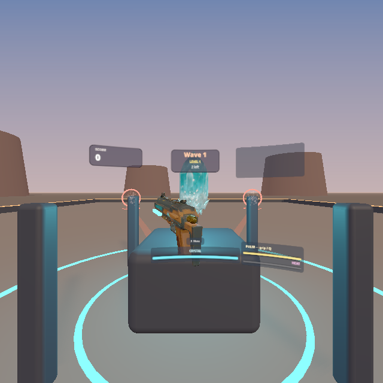
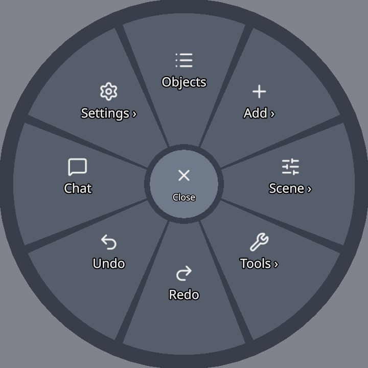
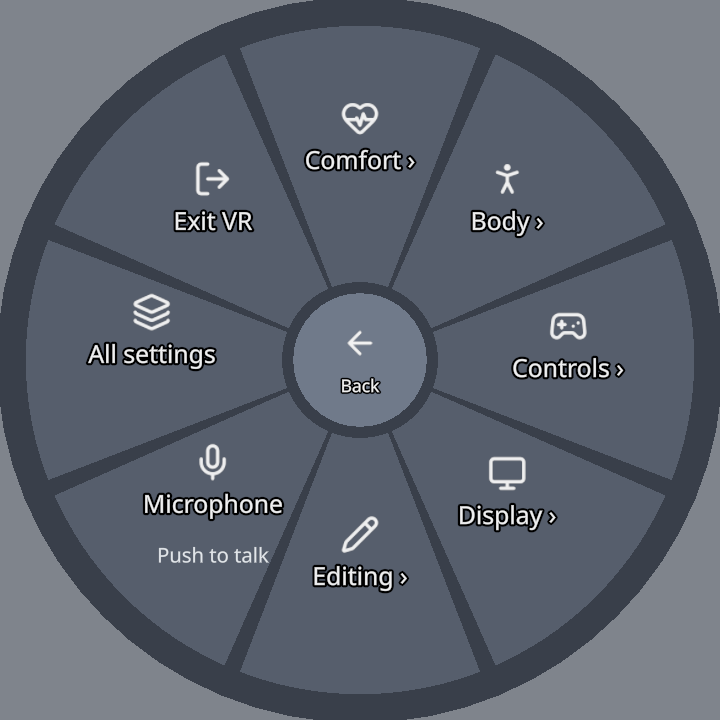
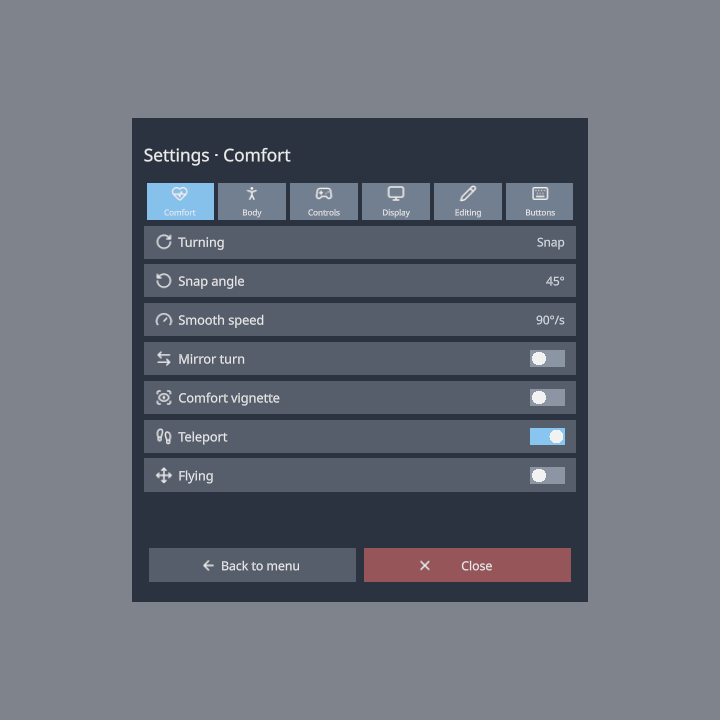
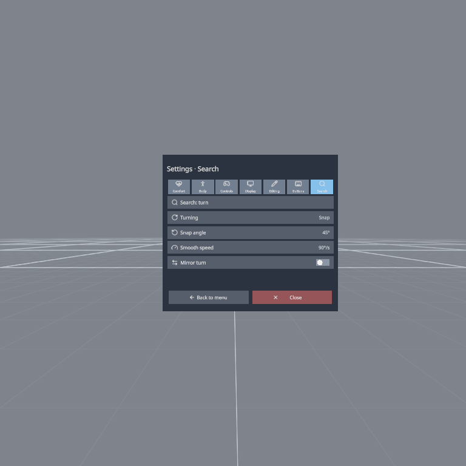
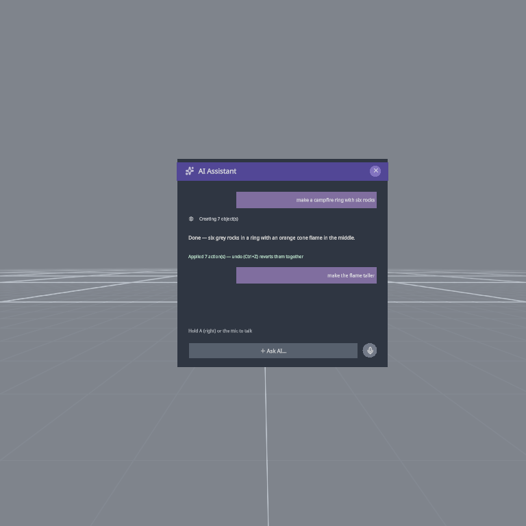

VR Guide
ThePrototype runs in a WebXR headset browser — build, edit and collaborate in room-scale with the same scene your desktop peers see. This page maps out the controls, the radial menu and the VR-specific settings.
Note
VR is fully collaborative: your movement, hands, selections, edits, notes and pings all replicate. Desktop and VR peers share one scene.
Entering VR
Open the app in your headset browser and press the on-screen Play button. When a headset is present the button wears a pair of goggles instead of the play triangle, so you can see where the press is about to take you — and with passthrough on it shows A and R in the lenses. Passthrough/mixed-reality is a Settings toggle that keeps your room visible behind the scene.
In a Quest's browser the page can also offer the browser's own Enter VR button, once per visit (the Offer Enter VR setting — see Tours). The first time you enter VR on a device, the welcome tour shows you your controllers.
If someone is in the room with you, see Colocation — a short calibration puts the same objects on the same real table for both of you.
Refresh rate — under Settings ▸ VR ▸ Display (or radial Settings ▸ Display) you can pick Max / 90 / 120 Hz. Max uses the highest your headset reports; 120 Hz needs the Quest 120 Hz system setting enabled and applies on VR entry.
The controllers at a glance
| Input | Does |
|---|---|
| Trigger | Point & select — pick objects, press menu tiles, paint colors, draw, pick faces/vertices. |
| Grip / squeeze | Grab the pointed object and move it. |
| Both grips (empty air) | Grab the world — move, rotate and scale yourself relative to the scene. |
| Left thumbstick | Move / strafe (forward follows your aim while VR flying is on). |
| Right thumbstick up | Aim & fire a teleport arc. |
| Right thumbstick left/right | Turn — in snap steps or smoothly (Settings ▸ Comfort ▸ Turning). |
| Right-hand B button | Toggle the radial menu (Y on the left hand if your menu hand is the left). |
| Right-hand A button (hold) | Push-to-talk voice. In a game (Interact or Play) whose character can jump, A jumps instead. |
| Left-hand X button | In a game, opens the game's pause menu (Resume, Restart, Levels, Settings, How to play, Main menu). |
| Right thumbstick click | Ping where you're pointing. |
One hand is the menu/pointer hand (right by default; Settings ▸ Controls ▸ Menu hand), the other drives locomotion. These are the default buttons: every action except grab and select can be remapped.
Playing games in VR: Edit and Interact
A game (a scene with a menu screen, a start spot, or a game module) opens in Interact when you put the headset on:
- your grips grab and knock things. They do not move the world — unless the game asks for it: Untangle and the Jam Room let a grip in empty air move, turn and scale the whole scene, as in Edit (a grip on something you can hold still holds it);
- the left stick walks you: walls stop you, gravity keeps you on the floor, small steps climb. No flying or teleporting unless the scene allows it (see Flying). Where a game allows teleport it keeps you inside: you land only on walkable ground inside the play area, never through a wall — a red arc means that spot is refused and releasing does nothing;
- editor helpers (the grid, light and collider wireframes, outlines) are hidden;
- the game's menu, pause and results screens float in front of you — point the laser and pull the trigger (or poke them); what you read while playing — the score, the timer, the hints — floats in front of you on the game HUD and sits on your left wrist (turn it to read). The laser ends in a solid dot and the button under it lights up, and menus are drawn over the scene so a floor or a wall never hides them;
- the left X button opens the game's pause menu;
- hold the trigger and sweep across piano keys, drum steps, pads, mixer mutes or pedal footswitches — each one you pass fires once;
- the controllers vibrate for touches, presses, grabs and knocks.
Press Y on the left controller (B on the right if your radial menu is on the left hand, or the button you mapped to Edit / Interact) to switch to Edit — a tick in your hand and a small wrist label say which mode you are in. In Edit your grips move, turn and scale the world again, you can fly and teleport, and the helpers come back. Press it again to return to Interact; the game puts you back on its start spot. The menu board's Edit mode button does the same.
On a desktop, press Esc to leave Play, then the bar's Edit/Interact cell (or I).
In Race you sit in the car: the left stick drives and steers, and you step out beside the driver's door when the race ends.
The game HUD in a headset
Since 1.24, when you play a game in VR its HUD — the score, the timer, the level, the hints its author laid out — floats in front of you on a gently curved band, arranged the way the author arranged it on the desktop: the score card up and to the left, the clock up and to the right, the hint along the bottom. It replaces the single strip of short text lines earlier versions showed.

It appears by itself whenever a game is running and you are in Interact or Play; there is nothing to set up. Menus (the start screen, pause, results) still appear on the board in front of you — the band carries what you read while playing.
- Small motions of your head leave the band still, so it doesn't jitter; when you turn, it follows you smoothly.
- If you walk up to a wall or a game board, the band moves in front of it, so it never looks as if it is behind something it is drawn over. Its apparent size stays the same.
- The card on your left wrist is still there (turn your wrist to read it), with the Edit mode button, Menu, and a HUD button that switches where the band goes.
Settings ▸ VR ▸ Display (also the headset's Settings panel and the radial menu's Settings ▸ Display):
| Setting | Choices |
|---|---|
| Game HUD | Follow head (the default: follows with a little lag), Fixed in world (stays put until you turn about 50° away or walk off, then moves in front of you again), Wrist only (no band; the wrist card carries the readouts, as before 1.24). The wrist card's HUD button cycles the same three |
| Game HUD size | Small / Medium / Large |
| Button hints | a row under the HUD saying which controller button does what in this game — for example Trigger Fire · X Menu. It lists only what you can actually press in a headset |
Limits
- The band is read-only: you can't point at it or press it. Anything pressable (a menu, a settings screen) goes on the board.
- A crosshair, a minimap, the debug pill and a full-screen damage flash have no headset form (you aim with a controller).
- A module's own HUD element shows in the headset only if the module says what it reads there (see the Module SDK). Untangle's clock does from Untangle 2.4.1; its old floating Level · crossings sprite is gone on 1.24, because the app shows the template's HUD now.
- Keyboard hints written into a game's HUD (WASD to move) show as written. The Button hints row is the headset's own.
The radial menu
Press B on the right controller (or the button you mapped to it) to open the radial menu on that hand. On hand-tracked hands, which have no buttons, pinch and hold for about half a second instead; a quick pinch stays a normal click.
Point at a sector with the other hand's laser, or push either thumbstick toward it, then pull the trigger or press the stick. The hovered sector lifts toward you and a picked one flashes. The ring you are in is named above the menu, and nothing is more than two rings below the first one.
The centre hub is:
- Close on the first ring,
- Selected on the first ring when something is selected — everything you can do to the selection,
- Back in every other ring.
With Hold to open menu on (Settings ▸ Controls), hold the menu button and let go over a sector. Letting go over a sector that opens another ring opens that ring and keeps the menu up.
The first ring

The names and icons match the desktop menus:
| Sector | Does |
|---|---|
| Objects | opens the scene object list panel |
| Add ▸ | the viewport menu's Add: Cube, Wedge, Stairs, Sphere, Cylinder, Torus, and Prefabs |
| Scene ▸ | Environment ▸ (Studio, Daylight, Sunset, Night, Classic), Colocate ▸ (see Colocation), Grid, World 1:1 (undo a scaled or rotated world grab) |
| Tools ▸ | Select, Box select, Draw mode, Ping, Simulate physics, Profile ▸, AI (below) |
| Redo · Undo | step through history |
| Chat | opens the VR chat panel |
| Settings ▸ | every VR setting, the microphone, the welcome tour and Exit VR (below) |
Tools ▸ Profile ▸ holds Record and Record detailed (Stop recording while one runs) and Report moment — see Profiling the headset.
Selected
With something selected, press the hub. The Selected ring follows the desktop object menu's order, with Delete last:
Duplicate · Edit mesh · Properties · Color · Snapping · Wireframe · Save prefab · Edit collider · Delete
- Edit mesh opens the face and vertex tools (Extrude, Inset, Move, Delete — see below). Its slot shows Ungroup for a group, Edit spline for a spline, and Group selection when several objects are selected.
- Color opens a live palette, Snapping its side-menu.
- Edit collider shapes the object's collider in the headset — see Colliders.
- With several objects selected, Duplicate, Save prefab and Delete act on all of them and show how many.
Settings

Settings ▸ has a ring per page — Comfort, Body, Controls, Display and Editing — plus:
- Microphone — press to cycle Push to talk / Open / Off;
- Welcome tour — plays the VR welcome again;
- All settings — the settings panel;
- Exit VR.
Each sector in a page's ring shows the setting's current value. Pressing it flips, cycles or steps the value, and the ring stays open so you can see the change.
All settings opens a panel with the same rows, one page per tab, plus a Buttons tab (remapping). Point and pull the trigger, or use a stick: up and down move between rows, left and right change a value (or the page, on the tab strip), and a stick press presses the row. Back to menu returns you to the Settings ring.

Search — the last tab of the panel. Press the query row and type on the VR keyboard: the results follow every key (turn lists Turning, Snap angle, Smooth speed and Mirror turn). Press a result to change it right there. Esc on the keyboard puts the previous search back.

Getting around
- Move — push the left thumbstick. With VR flying on, forward follows where your controller aims; otherwise it stays level. Hold the left grip to switch the stick to panning and elevation.
- Teleport — push the right thumbstick up to arc a beam, release to blink to the landing spot (in Edit: the ground or any upward-facing surface; in a game, only walkable ground inside the play area — a red arc is refused). Toggle teleport in Settings.
- Turn — push the right thumbstick left/right. Turning is Snap (fixed steps of the Snap angle, 15–90°, default 45°), Smooth (a steady turn at the Smooth speed) or Off, in Settings ▸ Comfort; Mirror turn flips the direction, and the Comfort vignette darkens the edges of your view while you turn or move. This works in Edit and in games alike.
- World grab — grip with both hands in empty air to grab the whole world: pull your hands apart/together to scale, twist to rotate, move to reposition. Scene ▸ World 1:1 snaps it back to normal. Holding the world with one grip, push the stick up/down to send it away or bring it closer, as with an object.
Grabbing, scaling and stretching
- Grip an object to grab it. The default rigid grab treats the controller as a handle — the grabbing hand's thumbstick reels the object nearer/farther and scales it. (Other grab styles: Settings ▸ Controls ▸ Grab style.)
- Two hands on the same object scales it uniformly by the distance between them. Two hands on two different objects hold one each (Towers' blocks): letting go of one never freezes the other.
- In Edit, walls and floors are scenery and a grip on them moves the world — select one first to grip it.
- VR Stretch — non-uniform, per-axis scaling. From the Edit menu, grab the W/H/D slider handles and drag horizontally to stretch that axis; the result is baked when you confirm.
- Box select (Tools ▸ Box select) — pull the trigger to anchor one corner, drag out a box, release to select everything inside it.
Grabbing a selection
In Edit, gripping any object that is part of a selection of two or more carries the whole selection: move your hand to move them all, twist your wrist to turn them, push the thumbstick left / right to scale them — about the pivot point, which you set in Settings ▸ Editing ▸ Pivot point (Active object is the one you grip). Letting go is one undo step.
Grid and surface snapping, and the stick's push / pull reel, apply to single-object grabs only.
Editing meshes in VR
VR supports both face and vertex editing:
- Faces — point at a face and Extrude, Inset, Move or Delete it. Extrude/Inset become a live adjust you drive by moving the controller; you can also grip a face to grab it directly.
- Vertices — pick vertex handles with the ray, or grip-drag them. Hold to move vertex (Settings) chooses between hold-style and toggle-style dragging.
Density caps
To stay smooth in VR, mesh editing is limited to 2500 triangles for face editing and 800 vertices for vertex editing by default; denser meshes refuse with a toast. Both limits are yours to change in Settings ▸ VR ▸ Editing ▸ Face edit limit / Vertex edit limit (also radial Settings ▸ Editing). The full-featured mesh editor is desktop-only.
Floating panels
The menu opens follower panels that hang in space — Objects, Properties, Color palette, Prefabs, Keyboard, Chat, Stats, plus the Edit/Snap/Settings menus. Every panel is grip-grabbable: hold the grip on a panel to detach and reposition it, and the gripping hand's stick resizes it. Your layout is remembered; Reset panel positions (VR Settings, or the desktop Settings button) restores the defaults.
Typing uses the VR keyboard — it pops up for renaming an object, for chat messages and for Ask AI; point at keys with the laser and press with the trigger, or walk the keys with the stick. Since 1.24 it has - ' ; , . ? (with Shift: _ " : < > /) and a clear key.
The AI assistant in VR
Radial menu ▸ Tools ▸ AI (the sparkles icon) opens a panel above your menu hand with the same conversation as the desktop AI Assistant window — what you asked on the desktop is there in VR, and the other way round. Your messages show as violet chips on the right, the assistant's answers below them; grey lines are what it is doing (Creating 3 object(s)).

- Ask — point at ＋ Ask AI… and pull the trigger (or press the stick): the VR keyboard opens; type and press ⏎. Everything the assistant builds replicates to your peers and undoes as one step.
- Talk — hold the mic button (keep the trigger held on it), or hold your talk button (A on the right controller by default — whichever button you mapped to Talk / jump) while the panel is up; let go to send. A red dot and Listening… show while it records. Peers do not hear you while you talk to the assistant.
- Stop — press it while the assistant is working.
- Grip the panel and drag to move it (it remembers where you put it); ✕ closes it.
There are no AI settings in VR: the provider and voice typing are set up in desktop Settings ▸ AI. Until a provider is set up, the panel says so and the input row stays shut.
Limits
- The panel shows the last 7 turns, two lines each; long answers are shortened — read them in full in the desktop window.
- Voice needs a browser that can record audio (Quest Browser, Chrome, Edge, Safari) and microphone permission. A recording stops itself after 60 seconds.
The sleeve palette
Settings ▸ VR ▸ Editing ▸ Sleeve palette (experimental, off by default; also radial Settings ▸ Editing) puts a strip of ghost primitives along the forearm of your other hand (not the menu hand), like a bracer. Point at one and trigger-drag it off: it follows your controller, the stick scales it and your wrist turns it; release the trigger to place it (one undo step). Grip-drop an object of yours onto the strip to keep it as a personal slot — those are saved on this device only.
Hand models
How you see hand-tracked peers is a local choice — Settings ▸ VR ▸ Display ▸ Peer hands (also radial Settings ▸ Display):
- Model — rounded capsule hands,
- Hands — cuboid finger bones,
- Spheres — a sphere per joint.
You can also set My hand model to a GLB from your Explorer library — it becomes part of your identity, pushed to peers so they see your custom hands rigidly posed at your wrists.
Pinging in VR
Click the right thumbstick (or Tools ▸ Ping) to ping where you're pointing. If the ray hits an object, the ping flashes a highlight on it for everyone; otherwise it marks the point on the ground. Pings carry your chosen color and chime and buzz a short haptic pulse — see Pinging.
Voice in VR
Hold the right-hand A button for push-to-talk, or set a mic mode (Push to talk / Open / Off) with the radial menu's Settings ▸ Microphone. A mic dot in the corner glows green while you transmit. Voice is spatial — peers hear you from where your avatar stands.
VR settings reference
The same settings, with the same names and in the same order, are in the radial menu's Settings ▸ rings, the headset's All settings panel, and desktop Settings ▸ VR. Search desktop Settings by any word in a row — vr, seated, smooth turn, vignette, remap — or by what it is for (wheelchair finds Stance).
| Page | Settings |
|---|---|
| Comfort | Turning (Snap / Smooth / Off), Snap angle (15 – 90°, default 45°), Smooth speed (45 – 180°/s, default 90°/s), Mirror turn, Comfort vignette, Teleport, Flying |
| Body | Stance (Standing / Seated), Height (±50 cm in 5 cm steps) |
| Controls | Menu hand (Right / Left), Hold to open menu, Left-handed, Grab style, Remap buttons, Reset buttons |
| Display | Refresh rate (Max / 90 / 120 Hz), FPS and draw calls, Statistics card, Peer hands, Passthrough (applies the next time you enter), Selection wireframe, Reset panel positions, Game HUD (Follow head / Fixed in world / Wrist only), Game HUD size (Small / Medium / Large), Button hints (game HUD) |
| Editing | Hold to move vertex, Sleeve palette (experimental), Face edit limit (2500), Vertex edit limit (800), Pivot point |
- Smooth turning and the comfort vignette (the edges of your view darken while the stick moves or turns you) work everywhere — in Edit as well as in games. Before 1.22 they only worked inside games. A game whose own Turning setting is Default follows yours.
- Seated lifts your view to a standing eye height, measured from your head when you switch to it. Height adds to that. While you walk in a game your feet stay on the floor.
Remapping your buttons
Settings ▸ VR ▸ Controls on the desktop, or Settings ▸ Controls ▸ Remap buttons in the headset (the Buttons tab of All settings), lists every VR action with its hand and button:
Move · Turn · Teleport · Radial menu · Edit / Interact · Game menu · Talk / jump · Ping · Drag the world
Grab and Select / use are not on the list: they are always either grip and either trigger.
- If you pick a button another action already uses, you get a warning and nothing changes. Choose Swap them, or press the row again in the headset, to trade places. For example, moving Move to the right hand takes Turn and Teleport over to the left stick.
- Left-handed mirrors every button to the other hand. Reset buttons brings back the defaults.
- Remapping is saved on this device only. Your peers keep their own buttons.
- The welcome tour names and lights your buttons, not the defaults.
Note
The Quest's ≡ menu button (left hand) is reserved by the system and is not available to web apps, so the radial menu uses B / Y instead.
Welcome tour
The first time you enter VR on a device, Welcome to ThePrototype VR mode walks you through your controllers in eight short steps; each one moves on when you do what it asks. Replay it from the radial menu's Settings ▸ Welcome tour, or from desktop Settings ▸ Interface ▸ Tours. See Tours.
Note
On-device feel — comfort, reach, turning speed — is best judged in the headset. If motion bothers you, start with teleport on, Snap turning and the Comfort vignette, or switch Stance to Seated.